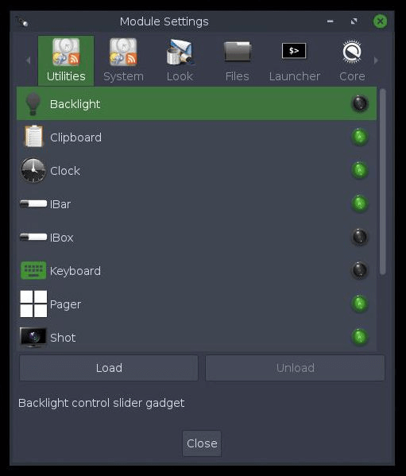

Organice sus tareas con escritorios virtuales
Los escritorios virtuales le permiten agrupar aplicaciones de un determinado tipo en un escritorio y las de un tipo diferente en otro. Tiene inicialmente cuatro escritorios virtuales, pero puede cambiar este número.
El Paginador en el panel muestra pequeños gráficos de los escritorios disponibles con las aplicaciones que se ejecutan en cada uno.
Hay varias formas de cambiar entre ellos:
- Con el Paginador, simplemente haga clic en el gráfico del escritorio en el que desee estar.
- Use el método abreviado de teclado: Ctrl+Alt + Tecla de flecha en la dirección en la que desee moverse.

Todo el escritorio es el menú.
Un clic en cualquier espacio vacío del escritorio abrirá el
menú principal, donde puede iniciar aplicaciones, ajustar la configuración,
apagar el sistema, etc. Este es el estándar en una instalación nueva de Bodhi.
La mayoría lo considera muy conveniente, pero para los pocos que no piensen así,
la vinculación del ratón a "Mostrar menú principal" se puede quitar o configurar
fácilmente en: Menú principal -> Preferencias -> Panel de Opciones -> Entrada ->
Atajos de ratón, así como cualquier otro atajo.
Al hacer clic derecho en un espacio vacío en el escritorio, aparecerá el menú de favoritos.
Dado que no hay aplicaciones favoritas en una instalación nueva de Bodhi, el menú Favoritos
mostrará la lista vacía. ¡Está esperando a que agregue aplicaciones! Para hacer esto, vaya al
Menú principal -> Preferencias -> Panel de opciones -> Aplicaciones -> Aplicaciones favoritas.

Muchas extensiones muestran información del sistema.
Las extensiones realizan una amplia variedad de funciones. Muchas muestran información del sistema, como el nivel de la batería, el tiempo o la frecuencia de la CPU. Otras le permiten interactuar con el sistema de alguna manera, como ajustar el volumen o el brillo de la pantalla. La mayoría permite múltiples instancias en diferentes ubicaciones, por ejemplo, en un panel o en el escritorio.
Se pueden encontrar y agregar al escritorio a través de: Menú principal -> Preferencias -> Panel de opciones -> Extensiones

Disponibilidad del control de módulos
Una extensión estará disponible solo si su módulo está cargado. En pocas palabras, una extensión es una instancia de un módulo. Para cargar/descargar módulos, vaya a Menú principal -> Preferencias -> Módulos.
Bodhi viene con una amplia selección de módulos instalados de forma predeterminada, y se pueden instalar más a su gusto a través del Bodhi AppCenter, el administrador de paquetes Synaptic o desde una terminal.
Paneles: el hogar dulce hogar de la barra de tareas y la bandeja del sistema
Moksha proporciona paneles para albergar sus dispositivos y lanzadores, una alternativa conveniente a tenerlos en el escritorio, ya que la mayoría de los dispositivos se pueden agregar a los paneles). Los paneles se pueden ubicar en cualquier lugar del borde de su escritorio, y puede tener más de un panel en un escritorio, así como diferentes paneles en diferentes escritorios virtuales.
La gestión del número de páneles, así como su ubicación, tamaño y otros atributos, se realiza en
Menú principal -> Preferencias -> Paneles. Para administrar el contenido de un panel (es decir, sus extensiones), haga clic con el botón derecho en el panel y seleccione
shelf -> Contenidos (que es un panel estándar con muchas extensiones).


Enrollar - Alternativa a Minimizar
¿Quiere quitar una ventana de su camino pero no quiere minimizarla en la barra de tareas?
¡Entonces a enrollar! Simplemente haga doble clic en la barra de título de cualquier ventana para "enrollarla"
y haga doble clic en la barra de título para "desenrollarla" nuevamente.
La captura de pantalla muestra dos instancias de Terminology, una enrollada y otra no. Terminology es el terminal predeterminado en Bodhi.
Algunos atajos útiles:
Los accesos directos se denominan Atajos en Moksha y pueden activarse, por ejemplo, para hacer clic con el ratón en un borde de la pantalla, para elegir una combinación de teclas o presionar una tecla + clic del mouse. Se clasifican de la siguiente manera:
- Atajos de los bordes (bordes de la pantalla)
- Atajos de teclado
- Atajos de ratón (ratón+tecla)
- Atajos ACPI (eventos)
Puede configurar sus propios atajos, pero muchos ya se han configurado de forma predeterminada. Estos incluyen:
Alt+clic izquierdo (ratón)
le permite hacer clic en cualquier lugar de la ventana para tomarla y reposicionarla
clic izquierdo (ratón)
en una parte libre del escritorio, abre el menú principal
clic derecho (ratón)
en una parte libre del escritorio, abre el menú de favoritos
Ctrl+Alt+X (teclas)
cierra una ventana
Ctrl+Alt+Tecla de flecha (teclas)
cambia al escritorio virtual en la dirección seleccionada
Ctrl+Alt+M (teclas)
abre el menú principal
Mayús+F10 (tecla)
maximiza una ventana verticalmente
Alt+Mayús+F10 (teclas)
maximiza una ventana horizontalmente
Alt+Tab (teclas)
cambia entre ventanas en el mismo escritorio
Todos los atajos se pueden ubicar y configurar en:
Menú principal -> Preferencias -> Panel de Opciones -> Entrada
Para obtener más información y una lista completa de todas las combinaciones de teclas predeterminadas, consulte nuestro Wiki.


{kind=link}